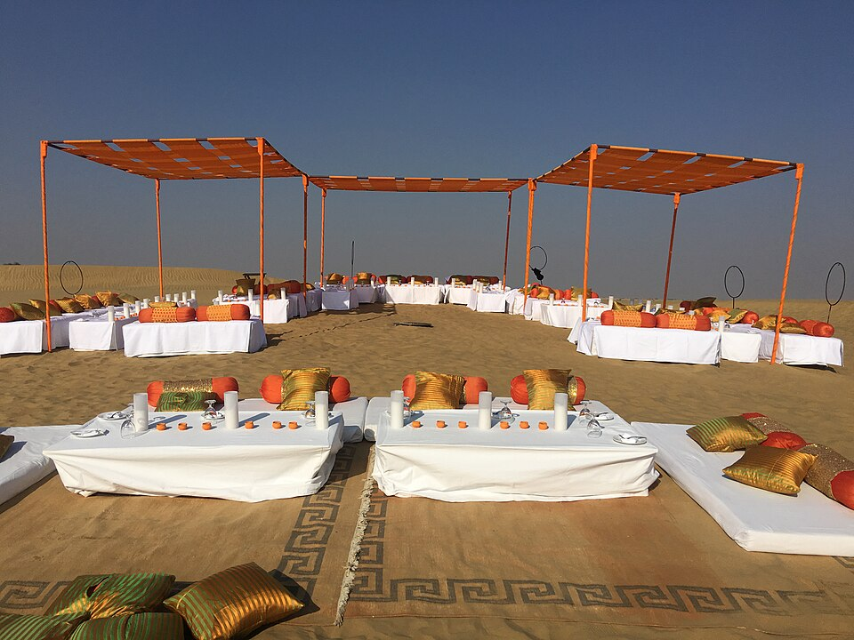

Jaisalmer Local TourJaisalmer · Rajasthan
City sightseeing
Jaisalmer Local Sightseeing
Enquire about a taxi to Jaisalmer Fort, Patwon Ki Haveli, Gadisar Lake, heritage lanes and other city attractions.
Enquire for this tour →Explore the Golden City with KK Tours & Travel. Enquire about a private taxi for Jaisalmer sightseeing, Tanot Mata Temple, Longewala, Sam Sand Dunes, Kuldhara and journeys across Rajasthan.
Choose a destination and share your travel dates, pickup point and passenger count. We will discuss the route, taxi availability and fare before you confirm.
Enquire about a taxi to Jaisalmer Fort, Patwon Ki Haveli, Gadisar Lake, heritage lanes and other city attractions.
Enquire for this tour →
Ask for a private taxi quote for Tanot Mata Temple and Longewala. Border-area access is subject to current rules and permissions.
Enquire for this tour →
Plan a taxi transfer to Sam Sand Dunes and nearby desert camps. Camel rides, jeep safari, camp stay and cultural programmes may cost extra.
Enquire for this tour →

Need a cab in Jaisalmer for local sightseeing, hotel or railway-station pickup, a Tanot Mata trip or a longer Rajasthan journey? Share your pickup location, travel date, passenger count and destination to request a quote from KK Tours & Travel.
Vehicle type, fare and availability are confirmed individually before booking.
Request a Jaisalmer taxi or intercity cab quote. For an accurate estimate, share your journey date, pickup, drop-off and return-trip requirement.
Intercity cab enquiry
Rajasthan intercity travel
Outstation taxi enquiry
Pickup and drop enquiry
Day-trip taxi enquiry
Desert transfer enquiry

Planning a Jaisalmer trip? The Golden City is known for its sandstone fort, historic havelis, desert landscape and cultural experiences. KK Tours & Travel helps visitors enquire about private taxi journeys and sightseeing around Jaisalmer and nearby destinations.
You can ask about a 2-day Jaisalmer trip, a 3-day Jaisalmer itinerary or a longer holiday plan covering the city, Kuldhara, Sam Sand Dunes, Tanot Mata and Longewala. The taxi service is quoted separately; hotel, desert camp, safari, meals and entry charges are not automatically included.
Explore Jaisalmer Tour Packages →Your itinerary can be adjusted to your arrival time, interests and travel dates. These are sample sightseeing ideas, not fixed or all-inclusive packages.
Day 1: Explore Jaisalmer Fort, Patwon Ki Haveli, Gadisar Lake and local markets. Day 2: Enquire about Kuldhara and a transfer to Sam Sand Dunes. Desert activities and accommodation are arranged and charged separately.
Ask for a 2-day taxi quote →Day 1: Jaisalmer city sightseeing. Day 2: Kuldhara and Sam Sand Dunes. Day 3: Ask about a Tanot Mata and Longewala day trip, subject to route conditions and permissions.
Ask for a 3-day taxi quote →Tell us your group size, preferred destinations and dates. We can discuss a suitable taxi plan. Package inclusions, hotel, meals, camp stay and safari costs must be confirmed separately.
Plan your trip →Call or WhatsApp KK Tours & Travel at +91 82332 80601. Share your travel date, pickup point, destination, passenger count and whether you need a one-way or return journey.
You can enquire about a private taxi for Jaisalmer to Tanot Mata and Longewala. Availability, route conditions and access to border areas depend on current rules and permissions.
You can enquire about local sightseeing covering Jaisalmer Fort, Patwon Ki Haveli, Gadisar Lake, Kuldhara and other nearby attractions.
Not automatically. Desert camp accommodation, camel safari, jeep safari, cultural programmes, meals and entry fees may be separate. Confirm every inclusion before booking.
Send your pickup point in Jodhpur, drop-off location in Jaisalmer, travel date and passenger count to ask about an intercity taxi quote.
Taxi fare depends on route, travel date, vehicle, trip duration and return requirements. Contact us for a quote. Hotels, desert camps and safari activities are not included unless specifically confirmed.
Send your travel date, pickup point and destination to enquire about a private taxi.